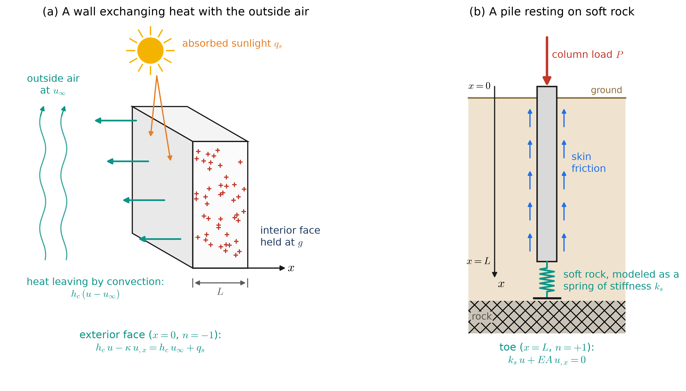
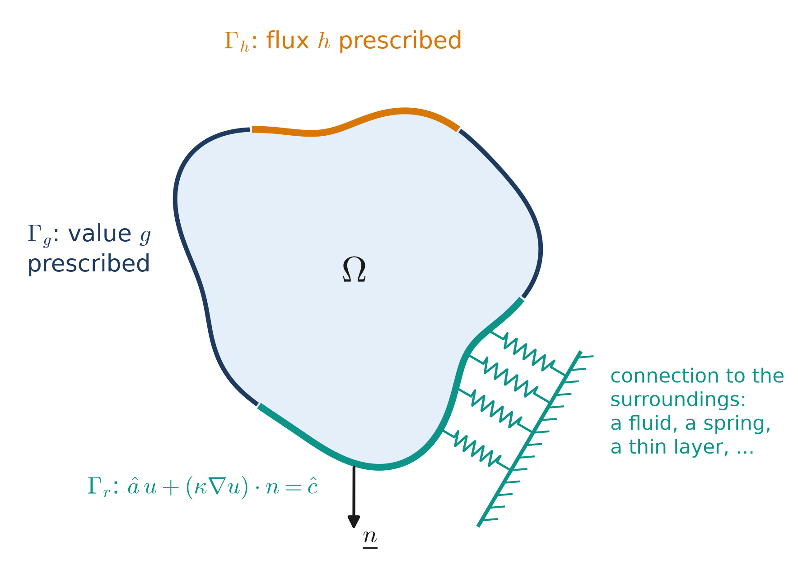
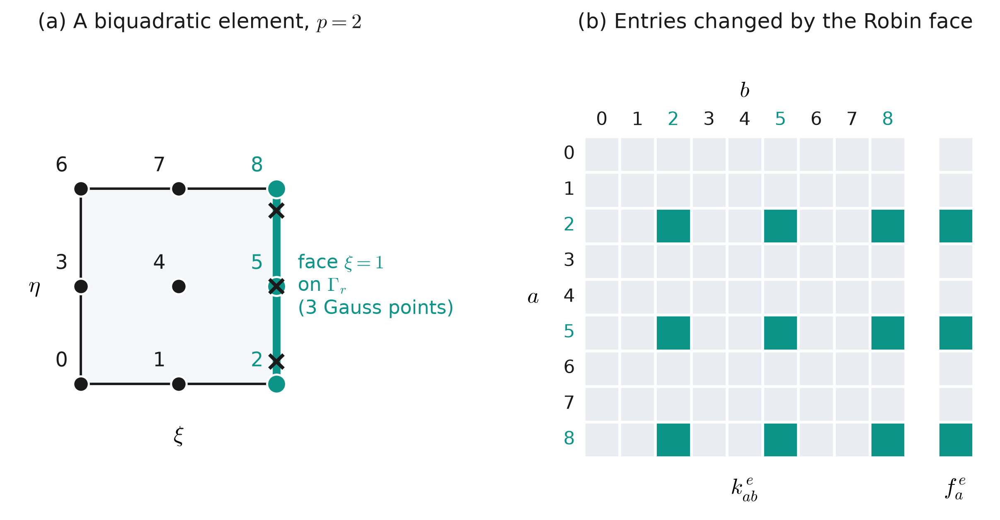

22 Class 22: Robin Boundary Conditions
Boundary conditions that relate the value of the solution to its flux
To this point, we have used two kinds of boundary conditions. On the Dirichlet boundary \(\Gamma_g\), the value of the solution is prescribed, and on the Neumann boundary \(\Gamma_h\), the flux is prescribed:
\[ u = g \quad \text{on } \Gamma_g, \qquad\qquad \left(\underline{\underline{\kappa}}\nabla u\right)\cdot\underline{n} = \kappa_{ij}u_{,j}n_i = h \quad \text{on } \Gamma_h . \]
Many boundaries of practical interest are neither. The outside face of a building wall does not have a known temperature, and the heat flowing through it is not known in advance either, since it depends on the temperature of the face itself. Similarly, the end of a pile resting on soft rock is neither held in place nor free, since the force it carries depends on how far the end moves. In both cases, the flux through the boundary depends on the value of the solution at the boundary, and a relationship of this kind is described by a Robin boundary condition. In this class, we will add Robin boundary conditions to the strong, weak, and Galerkin forms of the problem, and determine how they change the stiffness matrix and the force vector. The back face of the brick in Project 2 has a Robin boundary condition, and Homework 16 implements the terms derived here.
22.1 The Robin boundary condition
A Robin boundary condition prescribes a combination of the value of the solution and its flux on a portion of the boundary, \(\Gamma_r\):
\[ \hat{a}\,u + \left(\underline{\underline{\kappa}}\nabla u\right)\cdot\underline{n} = \hat{c} \qquad \text{on } \Gamma_r , \]
or, in index notation,
\[ \hat{a}\,u + \kappa_{ij}u_{,j}n_i = \hat{c} \qquad \text{on } \Gamma_r . \]
Here \(\hat{a}:\Gamma_r\to\mathbb{R}\) and \(\hat{c}:\Gamma_r\to\mathbb{R}\) are given functions, in the same way that \(g\) and \(h\) are given functions on \(\Gamma_g\) and \(\Gamma_h\). The hats distinguish them from other uses of the letters \(a\) and \(c\) in this course, such as the bilinear form \(a(\cdot,\cdot)\) and the coefficients \(c_A\) of a test function \(w^h\). When the conductivity is isotropic, \(\kappa_{ij}=\kappa\,\delta_{ij}\), the condition is often written using the normal derivative \(\partial u/\partial n = \nabla u\cdot\underline{n}\), as \(\hat{a}\,u + \kappa\,\partial u/\partial n = \hat{c}\).
22.1.1 Where Robin conditions come from
A Robin condition arises whenever the boundary is connected to something outside of the domain that responds in proportion to the value of the solution at the boundary. Rearranging the condition as
\[ -\left(\underline{\underline{\kappa}}\nabla u\right)\cdot\underline{n} = \hat{a}\left(u - \frac{\hat{c}}{\hat{a}}\right) \]
shows that the flux leaving the domain is proportional to the difference between \(u\) and a reference value \(\hat{c}/\hat{a}\), where \(\hat{a}\) measures how strongly the boundary is connected to its surroundings. What provides this connection depends on the physical problem, and Table 22.1 lists several common cases. A surrounding fluid is the most common case in heat transfer, but it is only one of them, and a pile resting on a spring, for example, involves no fluid at all. Figure 22.1 shows two of these settings, drawn in the same way as the examples of the appendices.

| physical setting | flux leaving, \(-\left(\underline{\underline{\kappa}}\nabla u\right)\cdot\underline{n}\) | \(\hat{a}\) | \(\hat{c}\) |
|---|---|---|---|
| convection to a fluid at temperature \(u_\infty\) | \(h_c\,(u - u_\infty)\) | \(h_c\) | \(h_c\,u_\infty\) |
| conduction through a thin layer of thickness \(t\) and conductivity \(\kappa_t\) to a body at temperature \(u_b\) | \(\dfrac{\kappa_t}{t}\,(u - u_b)\) | \(\dfrac{\kappa_t}{t}\) | \(\dfrac{\kappa_t}{t}\,u_b\) |
| the end of a rod on a spring of stiffness \(k_s\), whose other end is at \(u_s\) | \(k_s\,(u - u_s)\) | \(k_s\) | \(k_s\,u_s\) |
| mass transfer to a fluid at concentration \(u_\infty\), with coefficient \(k_m\) | \(k_m\,(u - u_\infty)\) | \(k_m\) | \(k_m\,u_\infty\) |
The most common case in heat transfer is convection, in which a surface exchanges heat with a surrounding fluid such as air or water. Newton’s law of cooling states that the heat flux leaving the surface is proportional to the difference between the temperature of the surface and the temperature of the fluid away from the surface, \(u_\infty\):
\[ \underline{q}\cdot\underline{n} = h_c\left(u - u_\infty\right), \]
where \(h_c\) is the convection coefficient, with units of W/(m²·K). Recall from the appendices that the heat flux is given by Fourier’s law, \(\underline{q} = -\underline{\underline{\kappa}}\nabla u\). Substituting this and rearranging gives
\[ -\left(\underline{\underline{\kappa}}\nabla u\right)\cdot\underline{n} = h_c\left(u - u_\infty\right) \qquad\Longrightarrow\qquad h_c\,u + \left(\underline{\underline{\kappa}}\nabla u\right)\cdot\underline{n} = h_c\,u_\infty , \]
which is a Robin condition with \(\hat{a} = h_c\) and \(\hat{c} = h_c\,u_\infty\). If the surface also absorbs a known heat flux \(q_s\), such as from sunlight, it is added to the right side, so that \(\hat{c} = h_c\,u_\infty + q_s\).
Typical convection coefficients are 2 to 25 W/(m²·K) for air moving by natural convection (driven only by buoyancy), 25 to 250 W/(m²·K) for air moved by a fan or by wind, and roughly 50 to 20,000 W/(m²·K) for liquids, depending on how they flow. The back face of the brick in Project 2 uses \(h_c = 9.06\) W/(m²·K), which is typical of still air.
The other cases in Table 22.1 have the same form, but do not involve a surrounding fluid. In the rod appendix, the end of a pile resting on rock that is modeled as a spring of stiffness \(k_s\) has the condition \(h = -k_s\,u\), since the spring pushes back on the pile in proportion to how far its end moves. This is a Robin condition with \(\hat{a} = k_s\) and \(\hat{c} = 0\), and the connection to the surroundings is elastic rather than thermal. A thin layer of a different solid material, such as the thermal interface material under the battery cell in the 2D heat appendix, gives a Robin condition by conduction alone, since the heat crossing the layer is proportional to the temperature drop across it. In contaminant transport, the rate at which a substance crosses a surface is often modeled as proportional to the difference in concentration across that surface, which again has the same form.
22.1.2 Robin conditions interpolate Dirichlet and Neumann
The Robin condition can be viewed as lying between the Neumann and Dirichlet conditions. If \(\hat{a} = 0\), it is a Neumann condition with \(h = \hat{c}\). If we instead divide the condition by \(\hat{a}\),
\[ u + \frac{1}{\hat{a}}\left(\underline{\underline{\kappa}}\nabla u\right)\cdot\underline{n} = \frac{\hat{c}}{\hat{a}} , \]
and let \(\hat{a}\) become very large while \(\hat{c}/\hat{a}\) is held fixed, the flux term vanishes, and the condition becomes a Dirichlet condition with \(g = \hat{c}/\hat{a}\). For convection, \(\hat{c}/\hat{a} = u_\infty\), so a very large convection coefficient holds the surface at the temperature of the fluid. Similarly, a very stiff spring holds the end of a rod at the position of the spring’s other end, in the same way as a fixed support.
Whether a particular value of \(\hat{a}\) should be considered large or small depends on the body to which it is applied, since the strength of the connection to the surroundings must be compared with the ability of the body itself to conduct. For convection from a body of thickness \(L\), this comparison is the Biot number
\[ \mathrm{Bi} = \frac{h_c\,L}{\kappa} \]
which compares the resistance to conduction through the body, \(L/\kappa\), with the resistance to heat transfer across its surface, \(1/h_c\). For a rod of length \(L\) and axial stiffness \(EA\) resting on a spring, the corresponding ratio is \(k_s L/(EA)\), which compares the stiffness of the spring with the axial stiffness of the rod. In either case, when the ratio is much greater than 1, the solution is close to that of a Dirichlet condition, and when it is much less than 1, the solution is close to that of a Neumann condition. The example later in this class shows this directly for convection.
22.2 The strong form
As before, consider a domain \(\Omega\subset\mathbb{R}^{n_{sd}}\), now with its boundary divided into three parts, \(\Gamma_g\), \(\Gamma_h\), and \(\Gamma_r\). These parts do not overlap, and together they make up the entire boundary \(\Gamma\), so that every point of the boundary has exactly one boundary condition. Given \(f:\Omega\to\mathbb{R}\), \(g:\Gamma_g\to\mathbb{R}\), \(h:\Gamma_h\to\mathbb{R}\), \(\hat{a}:\Gamma_r\to\mathbb{R}\), \(\hat{c}:\Gamma_r\to\mathbb{R}\), and a symmetric positive definite \(\underline{\underline{\kappa}}:\Omega\to\mathbb{R}^{n_{sd}\times n_{sd}}\), find \(u:\bar{\Omega}\to\mathbb{R}\) such that
\[ (\mathrm{S})\qquad \left\{ \begin{aligned} -\nabla\cdot\left(\underline{\underline{\kappa}}\nabla u\right) &= f && \text{in } \Omega\\ u &= g && \text{on } \Gamma_g\\ \left(\underline{\underline{\kappa}}\nabla u\right)\cdot\underline{n} &= h && \text{on } \Gamma_h\\ \hat{a}\,u + \left(\underline{\underline{\kappa}}\nabla u\right)\cdot\underline{n} &= \hat{c} && \text{on } \Gamma_r \end{aligned} \right. \]

22.3 The weak form
The weak form is derived in the same way as in Class 4. Multiplying the differential equation by a test function \(w\in\mathcal{V}\) and integrating over \(\Omega\) gives
\[ -\int_\Omega w\,\nabla\cdot\left(\underline{\underline{\kappa}}\nabla u\right)d\Omega = \int_\Omega w\,f\,d\Omega . \]
Applying the product rule and the divergence theorem, exactly as in Class 4, moves one derivative onto \(w\) and produces an integral over the boundary:
\[ \int_\Omega \nabla w\cdot\underline{\underline{\kappa}}\nabla u\;d\Omega - \int_\Gamma w\left(\underline{\underline{\kappa}}\nabla u\right)\cdot\underline{n}\;d\Gamma = \int_\Omega w\,f\,d\Omega . \]
The boundary now has three parts, so the boundary integral splits into three integrals, and each is simplified using the boundary condition on its part:
\[ \int_\Gamma w\left(\underline{\underline{\kappa}}\nabla u\right)\cdot\underline{n}\;d\Gamma = \underbrace{\int_{\Gamma_g} w\left(\underline{\underline{\kappa}}\nabla u\right)\cdot\underline{n}\;d\Gamma}_{0, \text{ since } w = 0 \text{ on } \Gamma_g} + \underbrace{\int_{\Gamma_h} w\left(\underline{\underline{\kappa}}\nabla u\right)\cdot\underline{n}\;d\Gamma}_{\left(\underline{\underline{\kappa}}\nabla u\right)\cdot\underline{n} = h} + \underbrace{\int_{\Gamma_r} w\left(\underline{\underline{\kappa}}\nabla u\right)\cdot\underline{n}\;d\Gamma}_{\left(\underline{\underline{\kappa}}\nabla u\right)\cdot\underline{n} = \hat{c} - \hat{a}\,u} = \int_{\Gamma_h} w\,h\;d\Gamma + \int_{\Gamma_r} w\left(\hat{c} - \hat{a}\,u\right)d\Gamma . \]
On \(\Gamma_r\), the Robin condition was solved for the flux, \(\left(\underline{\underline{\kappa}}\nabla u\right)\cdot\underline{n} = \hat{c} - \hat{a}\,u\). Substituting this into the previous equation and moving the term that contains \(u\) to the left side gives
\[ \boxed{\; \int_\Omega \nabla w\cdot\underline{\underline{\kappa}}\nabla u\;d\Omega + \int_{\Gamma_r} w\,\hat{a}\,u\;d\Gamma = \int_\Omega w\,f\,d\Omega + \int_{\Gamma_h} w\,h\;d\Gamma + \int_{\Gamma_r} w\,\hat{c}\;d\Gamma \;} \]
or, in index notation,
\[ \int_\Omega w_{,i}\,\kappa_{ij}\,u_{,j}\;d\Omega + \int_{\Gamma_r} w\,\hat{a}\,u\;d\Gamma = \int_\Omega w\,f\,d\Omega + \int_{\Gamma_h} w\,h\;d\Gamma + \int_{\Gamma_r} w\,\hat{c}\;d\Gamma . \]
The weak form is therefore: given the same data as the strong form, find \(u\in\mathcal{S}\) such that the boxed equation holds for every \(w\in\mathcal{V}\). The spaces \(\mathcal{S}\) and \(\mathcal{V}\) are the same as in Class 4, since only the Dirichlet boundary constrains them. Using the shorthand of earlier classes, \(a(w,u) = \int_\Omega \nabla w\cdot\underline{\underline{\kappa}}\nabla u\,d\Omega\) and \((w,v)_{\Gamma_r} = \int_{\Gamma_r} w\,v\,d\Gamma\), the weak form is written as
\[ (\mathrm{W})\qquad a(w,u) + (w,\hat{a}\,u)_{\Gamma_r} = (w,f) + (w,h)_{\Gamma_h} + (w,\hat{c})_{\Gamma_r} \qquad \text{for all } w\in\mathcal{V} . \]
Three observations about this result are worth noting.
- A Robin condition, like a Neumann condition, is a natural boundary condition. It appears in the integrals of the weak form, and not in the definitions of \(\mathcal{S}\) and \(\mathcal{V}\). Consequently, the value of \(u\) on \(\Gamma_r\) is unknown, and the basis functions whose nodes lie on \(\Gamma_r\) carry unknown coefficients, just as those on \(\Gamma_h\) and in the interior do. Only the nodes on \(\Gamma_g\) are prescribed.
- Unlike a Neumann condition, a Robin condition contributes a term to the left side of the weak form, since the flux on \(\Gamma_r\) depends on the unknown \(u\). This term will add to the stiffness matrix.
- The weak form also implies the strong form. Following the argument of Class 5, choosing test functions that are nonzero only near \(\Gamma_r\) recovers the Robin condition, in the same way that the Neumann condition was recovered on \(\Gamma_h\).
22.4 The Galerkin form and the matrix equations
As in Class 7, the trial solution is split into an unknown part and a known part, \(u^h = v^h + g^h\), where
\[ w^h = \sum_{A \notin \Gamma_g} c_A\,N_A , \qquad v^h = \sum_{B \notin \Gamma_g} d_B\,N_B , \qquad g^h = \sum_{\hat{B} \in \Gamma_g} g_{\hat{B}}\,N_{\hat{B}} . \]
Here \(\hat{B}\) indexes the basis functions whose nodes lie on \(\Gamma_g\). Substituting \(u^h = v^h + g^h\) into the weak form, and moving the known terms that contain \(g^h\) to the right side, gives the Galerkin form: find \(v^h\in\mathcal{V}^h\) such that, for all \(w^h\in\mathcal{V}^h\),
\[ a(w^h,v^h) + (w^h,\hat{a}\,v^h)_{\Gamma_r} = (w^h,f) + (w^h,h)_{\Gamma_h} + (w^h,\hat{c})_{\Gamma_r} - a(w^h,g^h) - (w^h,\hat{a}\,g^h)_{\Gamma_r} . \]
The final term is new. Since the Robin term on the left side contains \(u^h\), the known part \(g^h\) contributes to it as well, and that contribution is moved to the right side in the same way as \(a(w^h,g^h)\).
Substituting the sums for \(w^h\), \(v^h\), and \(g^h\), and choosing \(w^h = N_A\) one basis function at a time, as in Class 7, gives the matrix equation \(\underline{\underline{K}}\,\underline{d} = \underline{F}\), with
\[ K_{AB} = a(N_A,N_B) + (N_A,\hat{a}\,N_B)_{\Gamma_r} = \int_\Omega \nabla N_A\cdot\underline{\underline{\kappa}}\nabla N_B\;d\Omega + \int_{\Gamma_r} N_A\,\hat{a}\,N_B\;d\Gamma \]
and
\[ F_A = (N_A,f) + (N_A,h)_{\Gamma_h} + (N_A,\hat{c})_{\Gamma_r} - \sum_{\hat{B}\in\Gamma_g} g_{\hat{B}}\left[\,a(N_A,N_{\hat{B}}) + (N_A,\hat{a}\,N_{\hat{B}})_{\Gamma_r}\right] . \]
A Robin boundary condition therefore changes both the stiffness matrix and the force vector.
- The stiffness matrix gains the integral \(\int_{\Gamma_r} N_A\,\hat{a}\,N_B\,d\Gamma\). This is nonzero only when both \(N_A\) and \(N_B\) are nonzero on \(\Gamma_r\), which happens only when both of their nodes lie on a Robin face of the same element.
- The force vector gains \(\int_{\Gamma_r} N_A\,\hat{c}\,d\Gamma\), which is computed in exactly the same way as the Neumann term, with \(\hat{c}\) in place of \(h\).
- The Dirichlet term in \(F_A\) gains a Robin integral as well. This is nonzero only where a node on \(\Gamma_g\) also lies on a Robin face, which occurs at the points (or edges) where \(\Gamma_g\) and \(\Gamma_r\) meet.
Since \(\hat{a}\ge 0\) in physical problems, such as convection (\(\hat{a} = h_c\)) and spring supports (\(\hat{a} = k_s\)), the Robin term adds nonnegative contributions to the stiffness matrix. Class 23 shows that these contributions can make the stiffness matrix invertible even when there is no Dirichlet boundary at all.
22.5 Example: a wall exposed to outside air
The 1D heat appendix modeled a concrete wall of thickness \(L\) = 0.30 m and conductivity \(\kappa\) = 1.4 W/(m·K), heated internally by the hydration of the cement at \(f\) = 500 W/m³. Its interior face, at \(x = L\), was held at the room temperature \(g\) = 20 °C, and its outer face, at \(x = 0\), absorbed a solar heat flux of 50 W/m² as a Neumann condition. A more realistic model of the outer face also accounts for the heat that it exchanges with the outside air. Taking the outside air to be at \(u_\infty\) = 5 °C and keeping the solar flux \(q_s\) = 50 W/m², the outer face has the Robin condition
\[ h_c\,u(0) - \kappa\,u_{,x}(0) = h_c\,u_\infty + q_s , \]
since the outward normal at \(x = 0\) is \(n = -1\). This is a Robin condition with \(\hat{a} = h_c\) and \(\hat{c} = h_c\,u_\infty + q_s\).
In one dimension, \(\Gamma_r\) is a single point, and the boundary integrals reduce to evaluations at that point:
\[ (N_A,\hat{a}\,N_B)_{\Gamma_r} = h_c\,N_A(0)\,N_B(0), \qquad (N_A,\hat{c})_{\Gamma_r} = \hat{c}\,N_A(0) . \]
With linear elements, the only basis function that is nonzero at \(x = 0\) is the one belonging to the first node, so the Robin condition adds \(h_c\) to the first diagonal entry of \(\underline{\underline{K}}\) and adds \(\hat{c} = h_c\,u_\infty + q_s\) to the first entry of \(\underline{F}\), and changes nothing else. Note that the convection coefficient appears in both places: in \(K_{00}\) by itself, and in \(F_0\) multiplied by the air temperature. If the air were at 0 °C, the convective part of \(F_0\) would vanish, and only \(K_{00}\) would change with \(h_c\).
Solving the strong form of this problem exactly shows that the temperature of the outer face is
\[ u(0) = u_\infty + \frac{u_N(0) - u_\infty}{1 + \mathrm{Bi}} , \]
where \(u_N(0)\) = 46.8 °C is the temperature of the outer face in the Neumann problem of the appendix (\(h_c = 0\)). The Biot number alone therefore determines where the temperature of the outer face falls between the Dirichlet value \(u_\infty\) and the Neumann value \(u_N(0)\). For example, with \(h_c\) = 10 W/(m²·K), which is typical of outdoor air, \(\mathrm{Bi}\) = 2.14 and the outer face is at 18.3 °C. The widget below solves this problem with linear finite elements and shows the resulting matrix equations.
Things to try:
- Make \(h_c\) as small as possible. The solution approaches the Neumann solution of the appendix, and the outer face approaches 46.8 °C. The Robin term adds almost nothing to \(K_{00}\).
- Set \(h_c\) near 10 W/(m²·K). This is typical of outdoor air. The outer face is now much colder than in the Neumann problem, and most of the heat generated in the wall leaves through the outer face rather than into the room.
- Make \(h_c\) as large as possible. The outer face approaches the air temperature, as for a Dirichlet condition with \(g = u_\infty\). Both \(K_{00}\) and \(F_0\) grow in proportion to \(h_c\), and they dominate the first equation, which forces \(d_0\) toward \(F_0/K_{00} \approx h_c u_\infty/h_c = u_\infty\).
- Change the outside air temperature. The temperatures in the wall change, but in the matrix equations only \(F_0\) changes, by \(h_c\) times the change in \(u_\infty\), since the air temperature is part of the data \(\hat{c}\) and not of the coefficient \(\hat{a}\). Set the air to 0 °C: the convective part of \(F_0\) is then zero, so \(F_0\) no longer changes as \(h_c\) is varied, while \(K_{00}\) still does.
- Change the number of elements. Only the first row of \(\underline{\underline{K}}\) and the first entry of \(\underline{F}\) contain the Robin terms, regardless of how many elements are used.
22.6 Computing the Robin terms on an element
In two dimensions, \(\Gamma_r\) is made up of element faces, and the Robin integrals are computed face by face, using the face quadrature of Class 20. For an element \(e\) with a face on \(\Gamma_r\), for example the face \(\xi = 1\), the Robin contributions to the element stiffness matrix and force vector are
\[ k^{e}_{ab} \mathrel{+}= \int_{\Gamma^e_r} N_a\,\hat{a}\,N_b\;d\Gamma \approx \sum_{g} w_g\,N_a(1,\eta_g)\,\hat{a}\big(\underline{x}(1,\eta_g)\big)\,N_b(1,\eta_g)\,\big\|\underline{t}(1,\eta_g)\big\| , \]
\[ f^{e}_{a} \mathrel{+}= \int_{\Gamma^e_r} N_a\,\hat{c}\;d\Gamma \approx \sum_{g} w_g\,N_a(1,\eta_g)\,\hat{c}\big(\underline{x}(1,\eta_g)\big)\,\big\|\underline{t}(1,\eta_g)\big\| , \]
where \(\underline{t} = \partial\underline{x}/\partial\eta\) is the tangent to the face, and \(\|\underline{t}\|\) is the arc-length Jacobian of Class 20. These are the same face integrals used for the Neumann term, with a second basis function in the stiffness term.

Several practical points follow from these formulas.
- Only the basis functions whose nodes lie on the face are nonzero there, as noted in Class 20. For an element of degree \(p\), the Robin face therefore contributes to a \((p+1)\times(p+1)\) block of the element stiffness matrix, as shown in Figure 22.3.
- For a straight face and a constant \(\hat{a}\), the integrand of the stiffness term is a polynomial of degree \(2p\) in the face coordinate, so \(p+1\) Gauss points integrate it exactly.
- These contributions are assembled into \(\underline{\underline{K}}\) and \(\underline{F}\) in the same way as the interior contributions, using the IEN and ID arrays. If a node on the Robin face is a Dirichlet node, which can occur at an end of the face where \(\Gamma_r\) meets \(\Gamma_g\), its column is not assembled into \(\underline{\underline{K}}\). Instead, \(k^e_{ab}\,g_b\) is subtracted from \(f^e_a\), exactly as is done for the interior terms. This is the term \(-(N_A,\hat{a}\,N_{\hat{B}})_{\Gamma_r}\,g_{\hat{B}}\) in \(F_A\).
- In Homework 16, these integrals are computed by the functions
LocalStiffnessBoundaryTermsandLocalForceBoundaryTerms.
22.7 Summary
- A Robin boundary condition, \(\hat{a}\,u + \left(\underline{\underline{\kappa}}\nabla u\right)\cdot\underline{n} = \hat{c}\) on \(\Gamma_r\), relates the value of the solution to its flux. It describes a boundary that is connected to its surroundings, such as a surface cooled by a fluid (\(\hat{a} = h_c\), \(\hat{c} = h_c\,u_\infty\)), a thin layer of another material, or the end of a rod resting on a spring (\(\hat{a} = k_s\)).
- The Robin condition becomes a Neumann condition when \(\hat{a} = 0\), and approaches a Dirichlet condition with \(g = \hat{c}/\hat{a}\) as \(\hat{a}\) becomes large. The Biot number for convection, or \(k_s L/(EA)\) for a spring support, indicates which of these a particular coefficient is closer to.
- A Robin condition is a natural boundary condition: it does not change \(\mathcal{S}\) or \(\mathcal{V}\), and the nodes on \(\Gamma_r\) carry unknowns.
- It adds \((N_A,\hat{a}\,N_B)_{\Gamma_r}\) to the stiffness matrix and \((N_A,\hat{c})_{\Gamma_r}\) to the force vector, together with a Dirichlet term where \(\Gamma_r\) meets \(\Gamma_g\).
- These integrals are computed with the face quadrature of Class 20, and each Robin face contributes to a \((p+1)\times(p+1)\) block of the element stiffness matrix.
- Class 23 shows why the stiffness matrix, including these Robin terms, is invertible, and when it is not.